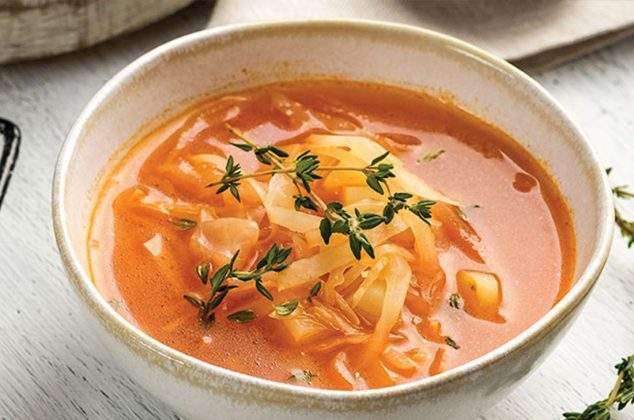

RecetasGratis


Ingredientes para preparar Sopa de Col:
Sigue los pasos de preparacion de la
Sopa de ColDisfruta de este delicioso platillo.
Ingredientes:
pasos de preparacion:
1.Quite el tronco y las hojas feas de la col.
2.Lavela bien y hiervala en agua salada surante 10 minutos.
3.Luego ponga a calentar 2 cucharadas de aceite en una cacerola y agregue el jamon picado, la cebolla en ruedas y las zanahorias en cubitos.
4.Deje freir hasta que dore el jamon moviendo constantemente y agregue la col en rebanadas finas, friendo durante otros momentos.
5.Añada u litro de agua caliente, 2 cucharadas de consome concentrado, sal, pimienta, las hojas de laurel y tomillo.
6.Deje hervior a fuego suave hasta que ablande la col, agregando mas agua si es necesario.